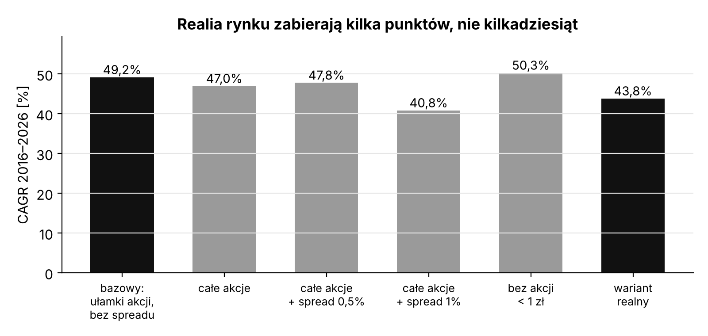
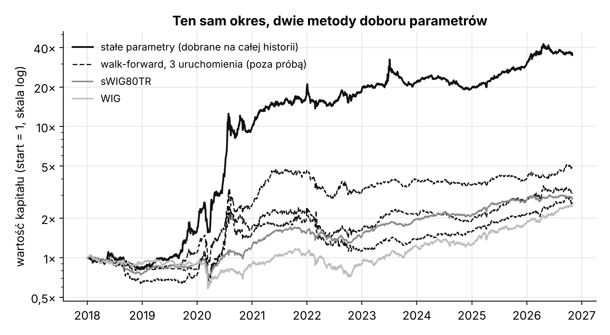
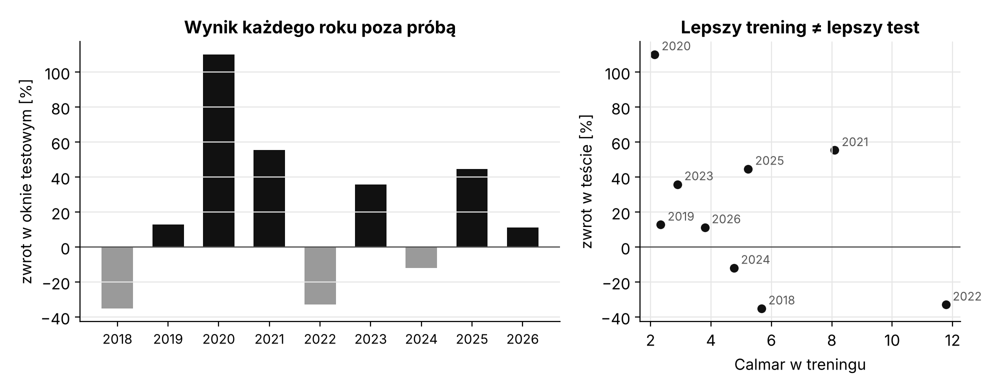
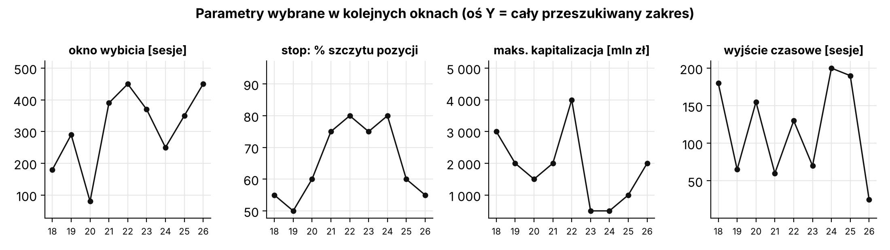

7394% w backteście. Ile z tego zostaje poza próbą?
Ten tekst zaczyna się od wykresu, który wygląda zbyt dobrze. Strategia wybicia na małych i średnich spółkach z GPW zamienia w backteście 10 tys. zł ze stycznia 2016 roku w ok. 750 tys. zł pod koniec października 2026, czyli +7394%, prawie 50% rocznie. Taki wynik nie jest odkryciem, tylko pytaniem: gdzie jest błąd?
Reszta tekstu to historia odejmowania. Po kolei dokładam do symulacji to, czego brakuje w idealnym świecie backtestu: całe akcje zamiast ułamków, spread, limit płynności, uczciwy benchmark, podział na okresy i wreszcie walk-forward, czyli dobór parametrów wyłącznie na podstawie przeszłości. Każdy krok zabiera część wyniku. Ciekawe jest to, który zabiera najwięcej.
Szczegóły strategii, jej parametry i silnik backtestowy pozostają prywatne. Opis poniżej jest celowo ogólny: pokazuje rodzinę strategii i metodę weryfikacji, a nie przepis do skopiowania. Tekst ma charakter edukacyjny i nie jest rekomendacją inwestycyjną.
W skrócie
- Strategia z autorskimi parametrami daje w backteście 2016–2026 CAGR 49,2% przy maksymalnym obsunięciu −39% i wskaźniku Sharpe'a 1,31.
- Realia wykonania (całe akcje, spread 0,5%, limit 10% dziennego obrotu, pominięcie akcji poniżej 1 zł) obniżają CAGR do 43,8%. Koszty nie są głównym problemem.
- Uczciwszy benchmark też niewiele zmienia: względem indeksu małych spółek sWIG80TR beta wynosi ok. 1,1, a alfa Jensena ok. 29% rocznie.
- Wynik jest nierówny w czasie: 24,5% rocznie w latach 2016–2019, 146,5% w hossie 2020–2021 i 33,9% od 2022 roku, przy obsunięciu do −57%.
- Prawdziwy test to walk-forward. Gdy parametry są dobierane wyłącznie na danych z przeszłości, CAGR w latach 2018–2026 spada z 49,8% do 11–19% w trzech uruchomieniach, czyli do poziomu indeksu małych spółek (12,5%). Przewaga poza próbą jest bliska zera.
- Parametry wybierane w kolejnych oknach skaczą po całym przeszukiwanym zakresie, a wynik w treningu nie przewiduje wyniku w teście. To klasyczny obraz przeuczenia przy 20 parametrach.
- Strategia w zarysie
- Silnik, dane i założenia
- Trzy błędy, które poprawiały wynik
- Odejmowanie realiów rynku
- Względem czego mierzyć alfę
- Jedna hossa czy trwała przewaga
- Walk-forward: parametry bez znajomości przyszłości
- Czy optymalizator znajduje strukturę, czy szum
- Wnioski i ograniczenia
1. Strategia w zarysie
Strategia należy do rodziny momentum szeregów czasowych (time-series momentum) w wersji wybicia, której najsłynniejszym przodkiem są zasady „Żółwi” Richarda Dennisa z lat 80. Idea jest prosta: kupować spółki, które właśnie ustanawiają długoterminowe maksimum, i trzymać je, dopóki trend trwa. Za tą prostotą stoi dobrze udokumentowana anomalia: inwestorzy reagują na nowe informacje z opóźnieniem (niedoreakcja), a potem trend wzmacnia stadne zachowanie. Na małych spółkach, które śledzi niewielu analityków, efekt bywa najsilniejszy.
Strategia składa się z pięciu klocków. Każdy ma swoje parametry:
| Klocek | Co robi | Parametry |
|---|---|---|
| Wejście | zamknięcie na najwyższym poziomie z długiego okna, potwierdzenie krótkoterminowego impetu, opcjonalnie warunek korekty | 7 |
| Uniwersum | przedział kapitalizacji (z możliwością wyłączenia), minimalna cena akcji | 4 |
| Wyjście | stop kroczący od najwyższego zamknięcia w trakcie pozycji, wyjście czasowe przy braku nowych sygnałów, warunek utrzymania rosnącej pozycji | 5 |
| Reżim rynku | miara szerokości rynku: jaka część spółek jest w trendzie spadkowym | 3 |
| Wielkość pozycji | stały ułamek kapitału na sygnał, odrębne traktowanie wybić na historyczne maksimum | 1 |
Razem to 20 parametrów: liczby (np. długość okna wybicia, poziom stopu, granice kapitalizacji) i przełączniki, które włączają lub wyłączają poszczególne filtry. Na siatce, którą przeszukuje optymalizator, daje to ok. 6·1018 kombinacji. Ta liczba wróci w sekcji o walk-forwardzie, bo przy takiej przestrzeni „najlepszy zestaw” prawie na pewno jest w części dziełem przypadku.
Jeden klocek działa inaczej niż w podręcznikach. Typowy filtr reżimu wyłącza strategię, gdy szeroki rynek jest w trendzie spadkowym. Tutaj miara szerokości rynku jest wykorzystywana w odwrotny, kontrariański sposób. Szczegółów nie podaję, ale wrócę do tego klocka przy analizie stabilności parametrów.
2. Silnik, dane i założenia
Backtesty liczy własny, zdarzeniowy silnik napisany w Javie, z modułami optymalizacji (pełna permutacja, próbkowanie losowe, algorytm genetyczny) i walk-forwardu. Założenia są konserwatywne:
- Dane: dzienne notowania 476 spółek z rynku głównego GPW (Stooq), styczeń 2016 – październik 2026.
- Brak zaglądania w przyszłość: sygnał powstaje na zamknięciu sesji, a zlecenie jest realizowane po cenie otwarcia następnej sesji.
- Prowizja: 1% wartości transakcji w każdą stronę, czyli kilka razy więcej niż u typowego polskiego brokera. Część tego narzutu ma pokryć poślizg.
- Kapitał: 10 tys. zł na starcie, stały ułamek kapitału na pozycję, bez dźwigni i krótkiej sprzedaży.
3. Trzy błędy, które poprawiały wynik
Każdy z poniższych błędów zawyżał wynik, a żaden nie powodował komunikatu o błędzie. To najgroźniejszy rodzaj błędów w badaniach ilościowych: wynik wygląda wiarygodnie, tylko jest lepszy, niż powinien.
Spółka notowana dwa razy
Po zmianie nazwy lub wydzieleniu części działalności ta sama historia notowań potrafi trafić do danych pod dwoma symbolami. Strategia widziała wtedy dwie „różne” spółki z identycznym wybiciem i otwierała podwójną pozycję. Pomogło czyste rozpakowanie danych od zera zamiast nadpisywania starych plików.
Płynność z niewłaściwego dnia
Limit wielkości zlecenia do 10% obrotu spółki był pierwotnie liczony z obrotu w dniu sygnału. To subtelne zaglądanie w przyszłość w drugą stronę: obrót dnia sygnału jest znany, ale transakcja odbywa się następnego dnia, kiedy obrót bywa dużo mniejszy. Poprawna wersja bierze niższą z dwóch wartości i sumuje wszystkie zakupy tej samej spółki w danej sesji. Bez tego kilka sygnałów jednego dnia mogło razem „kupić” więcej, niż rynek był w stanie dać.
Ułamki akcji
Silnik domyślnie kupował ułamkowe ilości akcji, np. 25,69 sztuki. Przy kapitale 10 tys. zł i drogich spółkach zaokrąglenie do całych akcji wyraźnie zmienia wielkość pozycji. Teraz jest to opcja symulacji.
4. Odejmowanie realiów rynku
Poniżej ten sam okres 2016–2026 i te same parametry, z kolejno dokładanymi realiami. Spread oznacza tu kupno o tyle procent drożej i sprzedaż o tyle procent taniej niż kurs, niezależnie od prowizji 1%.
| Wariant | CAGR | Maks. DD | Sharpe |
|---|---|---|---|
| Bazowy (ułamki akcji, bez spreadu) | 49,2% | −39% | 1,31 |
| Całe akcje | 47,0% | −39% | 1,28 |
| Całe akcje + spread 0,5% | 47,8% | −39% | 1,28 |
| Całe akcje + spread 1% | 40,8% | −41% | 1,14 |
| Bez akcji poniżej 1 zł | 50,3% | −35% | 1,36 |
| Realny: całe akcje, spread 0,5%, min. 1 zł | 43,8% | −38% | 1,22 |

Dwie rzeczy są tu pouczające. Po pierwsze, wariant ze spreadem 0,5% wypadł lepiej niż bez spreadu. To nie efekt ekonomiczny, tylko zależność od ścieżki: niewielka zmiana ceny jednej transakcji zmienia stan konta, a to przestawia wszystkie dalsze decyzje. Różnice rzędu ±2 punktów procentowych między wariantami należy traktować jako szum. Po drugie, pominięcie groszówek nie kosztuje nic, bo ich zyski zjadał spread. Koszty transakcyjne zabierają kilka punktów procentowych rocznie, a nie kilkadziesiąt. Problem z wynikiem leży gdzie indziej.
5. Względem czego mierzyć alfę
Porównanie z WIG-iem jest wygodne, ale nieuczciwe. Strategia kupuje małe i średnie spółki, więc naturalnym punktem odniesienia jest indeks małych spółek. Na danych dziennych z lat 2016–2026 (wariant realny) wychodzi:
| Benchmark | Beta | Alfa Jensena / rok |
|---|---|---|
| WIG (szeroki rynek) | 0,54 | 32,4% |
| mWIG40TR (średnie spółki) | 0,60 | 30,8% |
| sWIG80TR (małe spółki) | 1,06 | 28,9% |
Niska beta względem WIG-u nie oznacza niskiego ryzyka, tylko słabą korelację małych spółek z rynkiem zdominowanym przez banki i spółki Skarbu Państwa. Względem sWIG80TR beta wynosi ok. 1,1, czyli strategia w pełni nosi ryzyko małych spółek. Alfa spada jednak tylko o kilka punktów. Rozkład wyniku (atrybucja) pokazuje też, że niemal cała przewaga pochodzi z doboru spółek, a nie z wyczucia czasu wejścia w rynek. Gotówka stanowi zwykle kilka procent portfela, więc filtr reżimu nie chroni przed bessą. Według backtestu strategia zarabia na tym, co kupuje, a nie kiedy.
6. Jedna hossa czy trwała przewaga
Na wykresie w skali logarytmicznej widać, że największa część wzrostu przypada na lata 2020–2021, czyli na hossę małych spółek po krachu covidowym. Dlatego ten sam backtest uruchomiłem osobno dla trzech okresów, za każdym razem od 10 tys. zł:
| Okres | CAGR | sWIG80TR | Maks. DD | Sharpe |
|---|---|---|---|---|
| 2016–2019 | 24,5% | 1,4% | −26% | 1,03 |
| 2020–2021 | 146,5% | 31,7% | −42% | 1,90 |
| 2022–10.2026 | 33,9% | 12,3% | −57% | 0,88 |
Przewaga w backteście nie jest więc artefaktem jednego epizodu. W latach 2016–2019, gdy indeks małych spółek stał w miejscu, strategia zarabiała ok. 25% rocznie. Okres od 2022 roku pokazuje jednak koszt: obsunięcie −57%, gdy start przypadł na początek bessy. Ten sam okres w wariancie realnym daje CAGR 25,4% i obsunięcie −40%.
Wszystkie liczby do tego miejsca mają wspólną wadę: parametry strategii były znane, zanim powstał backtest. Zostały dobrane na tej samej historii, na której są oceniane. To jak ocenianie ucznia zadaniami, które sam wcześniej rozwiązał.
7. Walk-forward: parametry bez znajomości przyszłości
Walk-forward symuluje sytuację inwestora, który nie zna przyszłości. Historię dzieli się na okna. W każdym oknie parametry są optymalizowane wyłącznie na danych z poprzednich 24 miesięcy (okno treningowe), a następnie handlują przez kolejne 12 miesięcy, których optymalizator nie widział (okno testowe). Potem okno przesuwa się o rok. Sklejone okna testowe tworzą krzywą kapitału poza próbą (out-of-sample).
- Okna: 9 okien testowych od stycznia 2018 do października 2026, trening na 24 miesiącach przed każdym z nich.
- Przeszukiwanie: algorytm genetyczny, 2000 zestawów parametrów na okno, wszystkie 20 parametrów wolne.
- Kryterium wyboru: wskaźnik Calmara (CAGR / maks. obsunięcie). Kryteria nagradzające sam zwrot wybierają zestawy z ogromnymi obsunięciami.
- Realia w treningu i w teście: całe akcje, spread 0,5%, limit 10% obrotu, prowizja 1%. Warunki muszą być takie same w obu oknach, inaczej optymalizator wybierze parametry, które działają tylko w idealnym świecie.
Algorytm genetyczny jest losowy, więc cały walk-forward uruchomiłem trzy razy. Dla porównania: te same lata ze stałymi, autorskimi parametrami i tymi samymi realiami wykonania.
| 2018–10.2026 | CAGR | Maks. DD | Sharpe | Alfa vs sWIG80TR |
|---|---|---|---|---|
| Stałe parametry (w próbie) | 49,8% | −41% | 1,23 | 33,2% |
| Walk-forward, uruchomienie 1 | 13,6% | −45% | 0,49 | 2,7% |
| Walk-forward, uruchomienie 2 | 11,3% | −56% | 0,42 | 1,1% |
| Walk-forward, uruchomienie 3 | 19,1% | −43% | 0,65 | 7,2% |
| sWIG80TR | 12,5% | – | – | – |

To jest najważniejszy wynik badania. Różnica między backtestem ze stałymi parametrami a walk-forwardem wynosi ok. 30–38 punktów procentowych rocznie. To cena wiedzy o przyszłości, której inwestor w 2018 roku nie miał. Poza próbą strategia zarabia mniej więcej tyle co indeks małych spółek, przy porównywalnym albo większym ryzyku. Alfa względem sWIG80TR wynosi od 1 do 7% rocznie i nie jest statystycznie odróżnialna od zera.
Rozrzut między uruchomieniami też jest informacją. Te same dane, te same ustawienia, a końcowy kapitał różni się prawie dwukrotnie (od 2,6 do 4,6-krotności wkładu). Jeśli wynik zależy od ziarna generatora liczb losowych, pojedynczy walk-forward nie jest dowodem, tylko jedną próbką z rozkładu.
Najlepszy trening, najgorszy test
Najbardziej pouczające jest okno testowe 2022. Optymalizator trenował wtedy na latach 2020–2021 i znalazł zestaw o najwyższym wyniku treningowym w całym badaniu (Calmar 11,8). W teście ten zestaw stracił 33%. Parametry idealnie dopasowane do hossy małych spółek trafiły na jej koniec. We wszystkich 27 oknach z trzech uruchomień korelacja rang między wynikiem w treningu a zwrotem w teście wynosi −0,24 (p = 0,24): wynik treningowy nie mówi nic o przyszłości, a jeśli już, to raczej ostrzega.
Dłuższy trening nie pomaga
Naturalna hipoteza brzmi: 24 miesiące to za mało, by nauczyć się 20 parametrów. Wydłużenie okna treningowego do 48 miesięcy (testy od 2020 roku) daje CAGR 15,0% wobec 17,9% dla sWIG80TR w tym samym okresie i 47,1% dla stałych parametrów. Dłuższa historia nie zastąpi wiedzy o tym, które parametry są ważne.

8. Czy optymalizator znajduje strukturę, czy szum
Jeśli strategia ma prawdziwą przewagę, optymalizator w kolejnych oknach powinien wybierać podobne parametry. Jeśli dopasowuje się do szumu, będzie skakał po całej przestrzeni. Wykres pokazuje cztery najważniejsze parametry liczbowe; oś Y obejmuje cały przeszukiwany zakres.

Parametry liczbowe skaczą po całym zakresie. Okno wybicia zmienia się z 80 na 450 sesji i z powrotem, poziom stopu od 50% do 80% szczytu pozycji, maksymalna kapitalizacja od 500 mln do 4 mld zł. Gdyby te liczby niosły informację o rynku, nie zmieniałyby się tak gwałtownie z roku na rok.
Stabilniejsze są przełączniki strukturalne, czyli wybór, które klocki strategii są włączone. W 27 oknach z trzech uruchomień wejście oparte na najwyższym zamknięciu wybrano 22 razy, a filtr szerokości rynku 19 razy. To sugeruje, że wartość może leżeć w samej architekturze strategii, a nie w dokładnych liczbach. Rozsądniejsza wersja strategii miałaby więc kilka parametrów ustalonych z góry, na podstawie przesłanek ekonomicznych, i najwyżej 2–3 optymalizowane.
9. Wnioski i ograniczenia
Odpowiedź na pytanie z tytułu: z 7394% w backteście poza próbą zostaje ok. 11–19% rocznie, czyli mniej więcej tyle, ile dał indeks małych spółek. Ważniejsza jest jednak kolejność, w jakiej znikał wynik:
- Błędy w danych i symulacji były niewidoczne i wszystkie działały na korzyść strategii.
- Koszty transakcyjne i płynność zabrały ok. 5 punktów procentowych rocznie, mniej, niż się spodziewałem.
- Uczciwy benchmark zabrał kolejne kilka punktów alfy.
- Wiedza o przyszłości, czyli parametry dobrane na całej historii, odpowiadała za ok. 30–38 punktów procentowych rocznie. To największa pozycja w rachunku.
Nie oznacza to, że strategia nie ma przewagi. Walk-forward pokazuje tylko, że ponowna optymalizacja 20 parametrów na kilku latach danych nie potrafi jej wiarygodnie znaleźć. Do inwestowania potrzebny byłby inny proces: mniej parametrów, ustalonych przed testem, zamrożony plan badania i test na danych, których nikt wcześniej nie oglądał. Wynik backtestu jest hipotezą, a nie wynikiem inwestycyjnym.
Ograniczenia
- Survivorship bias: w danych tylko 49 z 476 spółek zakończyło notowania przed 2026 rokiem, a w ciągu 10 lat z GPW zniknęło ich więcej. Część bankrutów, czyli najgorszych możliwych transakcji strategii momentum, nie istnieje w tym świecie.
- Ceny korygowane wstecz: historyczne kursy są skorygowane o splity i dywidendy, więc filtr ceny minimalnej w starszych latach działa w przybliżeniu.
- Pojemność: przy 10 tys. zł wpływ na kurs jest pomijalny. Przy kilkuset tysiącach złotych 10% dziennego obrotu małej spółki porusza już ceną, czego model spreadu nie oddaje.
- Wielokrotne testowanie: w trakcie badania policzyłem kilkadziesiąt tysięcy backtestów. Każdy dodatkowy wariant zwiększa szansę, że któryś wynik jest dziełem przypadku. Następnym krokiem jest formalna kontrola przeuczenia: prawdopodobieństwo przeuczenia backtestu (PBO, metoda CSCV) i Deflated Sharpe Ratio. Niemniej, dokładając do strategii ludzki filtr decyzji o pominięciu inwestycji w niektóre spółki, pokazał, że strategia generuje alfę.